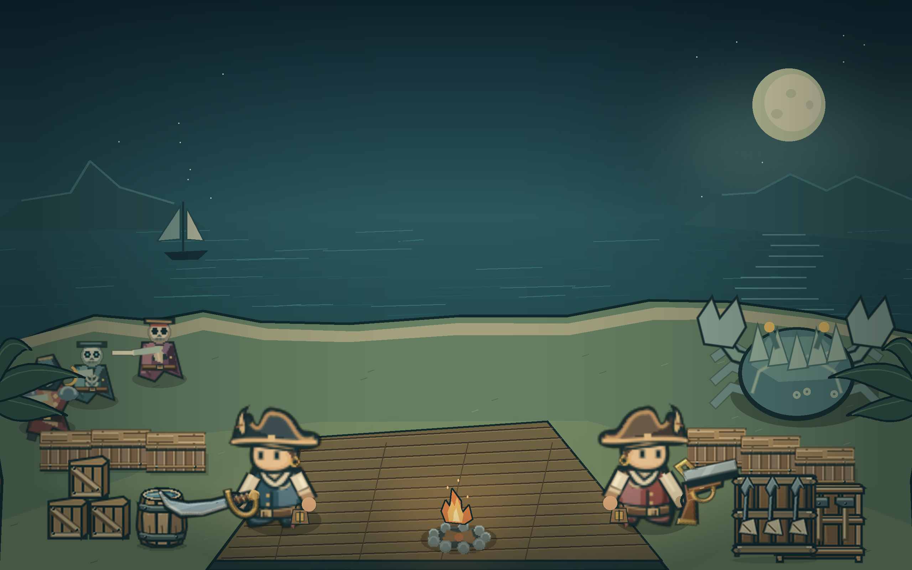
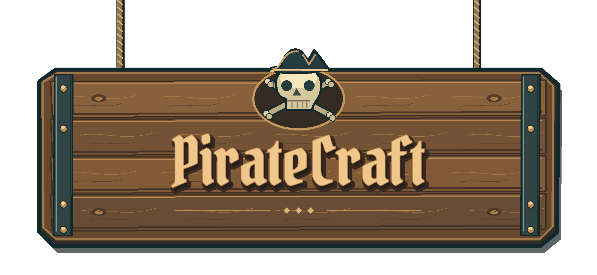

Follow the coastline
Sail between islands, venture into caves and uncover encounters beyond the safety of home.


WINDOWS · SOLO + TWO-PLAYER CO-OP · IN DEVELOPMENT
Make landfall. Build your haven. Sail into trouble — together.
Discover the adventureYOUR CREW. YOUR JOURNEY.
Sail between islands, venture into caves and uncover encounters beyond the safety of home.
Gather resources, craft equipment and grow an island base with farming, production and defenses.
Face enemies and bosses as a two-pirate crew. The host keeps the shared Journey.
ONLINE CO-OP
PirateCraft integrates Epic Online Services for Epic sign-in, private two-player lobbies, friend invitations and peer-to-peer connections with relay support.
Development status: public Epic access is awaiting brand review. Two-account invite, connection and rejoin testing is still pending. General multiplayer availability is not yet announced.
How multiplayer works →